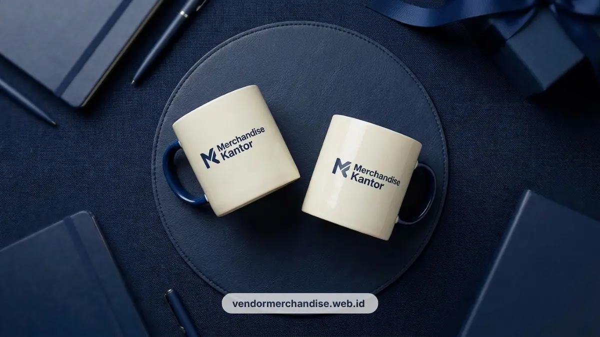

Merchandise kantor ramah lingkungan untuk perusahaan di Bandung tersedia dalam bentuk tote bag kanvas, mug keramik, dan set notes-pulpen yang bisa dicustom logo, siap produksi massal, dan siap dikirim ke kantor Anda.
Tren Sustainability dalam Corporate Gifting di Bandung
Tren sustainability mendorong perusahaan di Bandung mengganti merchandise sekali pakai dengan barang guna ulang berbahan ramah lingkungan sebagai bagian dari strategi branding korporat.
Pergeseran preferensi ini terlihat jelas di kalangan pekerja generasi muda maupun perusahaan rintisan (startup) dan industri kreatif yang tumbuh pesat di Bandung.
Tim HR dan marketing kini lebih sering meminta merchandise yang punya nilai guna jangka panjang, bukan sekadar suvenir yang berakhir di laci meja.
Tote bag kanvas, mug keramik, dan stationery custom menjadi pilihan utama karena tetap dipakai sehari-hari sehingga logo perusahaan terlihat berulang kali, bukan hanya sekali saat acara berlangsung.
Tren ini juga selaras dengan kebutuhan perusahaan yang ingin memperkuat citra sebagai entitas yang peduli lingkungan, terutama saat merchandise dibagikan pada klien, mitra, atau peserta acara korporat berskala menengah hingga besar di wilayah Bandung dan sekitarnya.
Material Ramah Lingkungan yang Populer untuk Merchandise Kantor
Material ramah lingkungan yang paling umum dipakai untuk merchandise kantor adalah kanvas katun untuk tas, keramik food grade untuk drinkware, dan kertas daur ulang untuk notes.
Setiap material dipilih bukan hanya karena aspek lingkungan, tetapi juga karena daya tahan dan kenyamanan pemakaian harian:
- Kanvas katun: Tekstur kuat, mudah disablon, dan bisa dipakai berulang untuk membawa dokumen atau barang pribadi.
- Keramik food grade: Aman untuk minuman panas dan dingin, permukaan halus sehingga hasil cetak logo lebih tahan lama.
- Kertas daur ulang bersertifikasi: Umum dipakai untuk notes atau notebook dengan tampilan natural yang tetap terlihat profesional.
- Pulpen daur ulang: Pulpen berbahan dasar kayu atau plastik daur ulang sebagai alternatif pengganti pulpen plastik sekali pakai.

Kombinasi material ini memungkinkan perusahaan menyusun satu paket merchandise yang konsisten dari sisi tema ramah lingkungan, mulai dari tas, drinkware, hingga alat tulis.
7 Rekomendasi Merchandise Kantor Ramah Lingkungan untuk Perusahaan
Berikut tujuh rekomendasi merchandise kantor ramah lingkungan yang siap dicustom logo dan cocok untuk kebutuhan gift karyawan maupun klien perusahaan di Bandung.
- Tote bag kanvas custom logo, ukuran standar untuk kebutuhan harian dan dokumen kantor.
- Tote bag kanvas dengan tali panjang, cocok untuk gift bag acara seminar atau workshop korporat.
- Mug keramik custom desain satu warna, pilihan paling umum untuk gift meja kerja karyawan.
- Mug keramik custom desain full color dengan kemasan gift box, cocok untuk gift klien atau tamu penting.
- Notebook atau notes berbahan kertas daur ulang dengan cover custom logo perusahaan.
- Pulpen custom logo berbahan ramah lingkungan, dijadikan satu paket bersama notes.
- Paket bundling tote bag, mug, dan notes-pulpen dalam satu set merchandise kantor untuk kebutuhan onboarding karyawan baru atau gift akhir tahun.
Ketujuh pilihan ini dapat dipesan secara terpisah maupun dalam bentuk paket bundling sesuai anggaran dan jumlah penerima merchandise.
Cara Mengaitkan Merchandise Ramah Lingkungan dengan Nilai ESG Perusahaan
Merchandise ramah lingkungan dapat mendukung nilai ESG perusahaan ketika dipilih berdasarkan material guna ulang, diproduksi dalam jumlah sesuai kebutuhan, dan dikaitkan langsung dengan program CSR yang sedang berjalan.
Beberapa cara praktis mengaitkan merchandise dengan strategi ESG perusahaan:
- Menjelaskan pada penerima bahwa merchandise dibuat dari material guna ulang sebagai bagian dari komitmen lingkungan perusahaan.
- Menghindari produksi berlebihan dengan menyesuaikan jumlah pesanan pada jumlah karyawan, klien, atau peserta acara.
- Menggunakan merchandise ramah lingkungan sebagai bagian dari kit sambutan program CSR, edukasi lingkungan, atau kegiatan komunitas di Bandung.
- Memilih desain custom logo yang simpel agar merchandise tetap nyaman dipakai sehari-hari, sehingga masa pakainya lebih panjang.
Pendekatan ini membuat merchandise bukan hanya suvenir, tetapi juga bagian dari narasi keberlanjutan yang ingin ditunjukkan perusahaan kepada karyawan, klien, maupun publik.
Melayani Pemesanan Merchandise Kantor Ramah Lingkungan di Bandung
Pemesanan merchandise kantor ramah lingkungan untuk perusahaan di Bandung dapat disesuaikan dengan kebutuhan event, jumlah penerima, dan tema desain logo yang diinginkan.
Setiap kategori produk di atas, mulai dari tote bag kanvas, mug keramik, hingga notes dan pulpen custom, dibahas lebih detail pada katalog produk merchandise kantor kami, termasuk pilihan bahan, teknik cetak, ukuran ideal, dan ide desain untuk kebutuhan kantor.

Pesan Merchandise Kantor Ramah Lingkungan Sekarang
Jika perusahaan Anda sedang menyiapkan merchandise untuk karyawan, klien, atau program CSR, tim Vendor Merchandise Kantor siap membantu proses custom logo, produksi, hingga pengiriman ke kantor Anda di Bandung.
Hubungi Vendor Merchandise Kantor sekarang untuk konsultasi jenis produk, jumlah pesanan, dan estimasi waktu produksi sesuai kebutuhan acara perusahaan Anda.